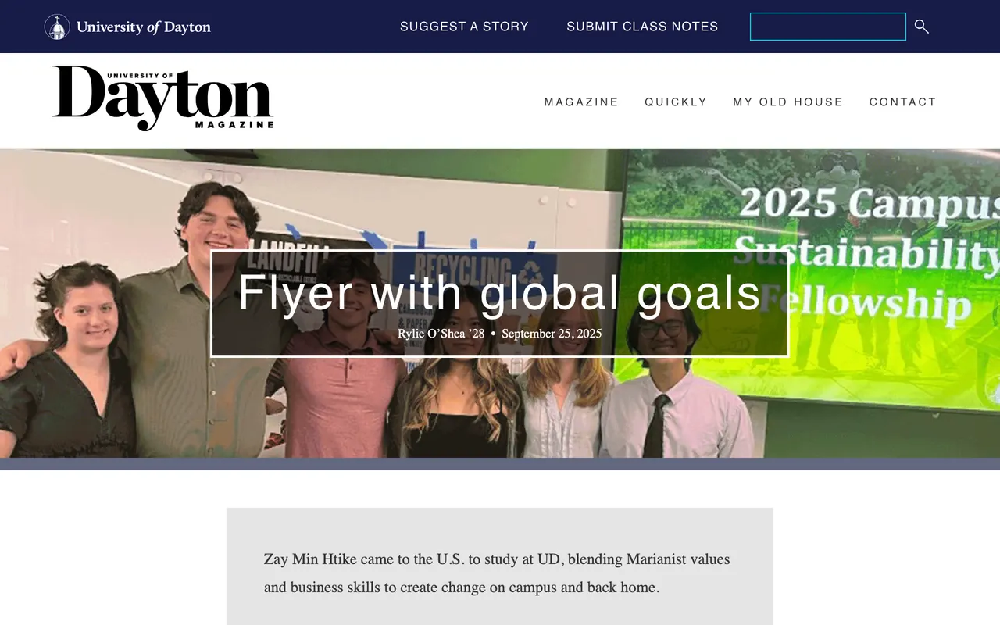
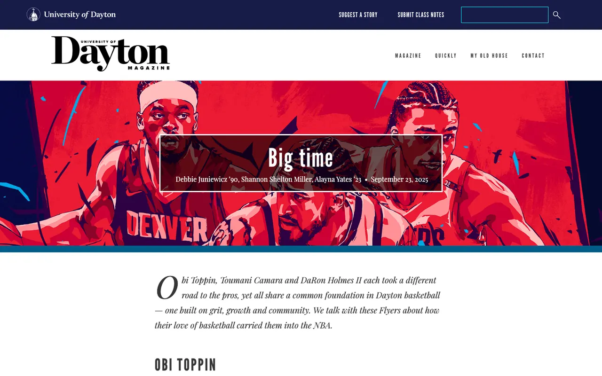

Case study · Digital publication · Team build
University of Dayton
Large institutional websites and long-form UD Magazine features, built responsively and launched with accessibility, SEO and analytics checked every time.

Overview
175+ initiatives across a university's web
At the University of Dayton I did frontend development across large institutional websites, working with marketing, communications, design and faculty teams. That meant building responsive pages and reusable components, then running the QA, analytics and SEO behind every launch.
This was team work inside a university, alongside marketing, communications, design and faculty teams. The screenshots are the public pages as they appear live in October 2026, and they reflect the work of many people. What follows is what I personally did, without figures I cannot share.
Responsibilities
What I did
- Managed 175+ digital initiatives across institutional websites, balancing development, support, QA and release deadlines.
- Built responsive pages with HTML, CSS, JavaScript, CMS templates and reusable components.
- Published with governance, creating, updating, reviewing and launching content against quality standards.
- Implemented technical SEO across metadata, internal linking, redirects, structured data, schema and site architecture.
- Used GA4 and Search Console to monitor traffic, engagement, crawl health, indexing and page-level SEO.
- Resolved site-health issues, including broken links, navigation errors, responsive defects and browser compatibility problems.
- Provided CMS guidance and troubleshooting to internal users, and maintained governance documentation.
Challenge
Many teams, one standard
A university website is written by many people across many departments. Each launch has to meet the same bar for accessibility, performance, search and governance, no matter who asked for it or how close the deadline is.
Process
The checks behind every launch
- Build: responsive pages from CMS templates and reusable components.
- Review: content checked against governance and quality standards before publishing.
- QA: Core Web Vitals, accessibility and page-performance best practice, plus cross-browser and responsive validation.
- Search: metadata, internal linking, structured data and redirects in place.
- Measure: GA4 and Search Console after launch.
Engineering
Infrastructure and integrity
- Structured data and schema on content pages, alongside site architecture and internal linking.
- DNS, HTTPS, SSL, hosting and redirect dependencies, worked through with the university's technical teams.
Showcase
Two features, live

Outcome
What I can point to
- 175+ digital initiatives managed across institutional websites.
- Both magazine features above are live and public.
- Accessibility, performance and SEO checks applied before every launch.
Traffic figures belong to the university, so they are not shown here.